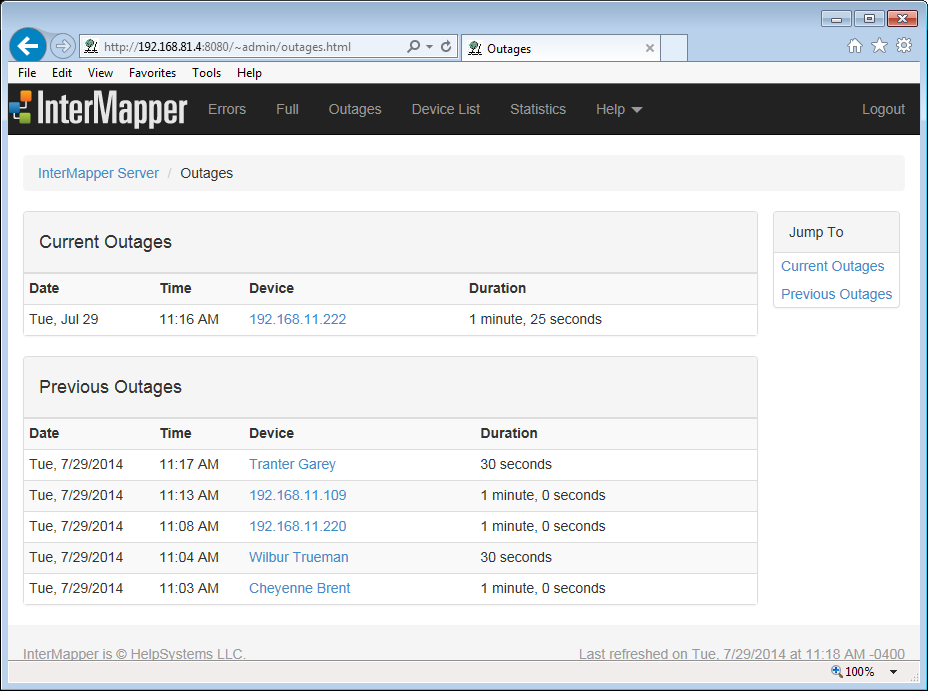

The Outages Web Page
Use the Outages web page to view a history of outages, as shown below.
- Click an active link on the Outages Web page to view detailed information as described in the Map Web Page topic.
The Outages web page lists up to 10 outages for each device.

The InterMapper Outages web page.